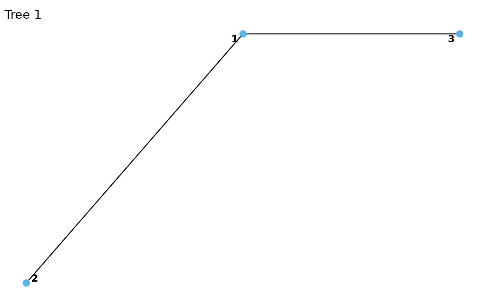
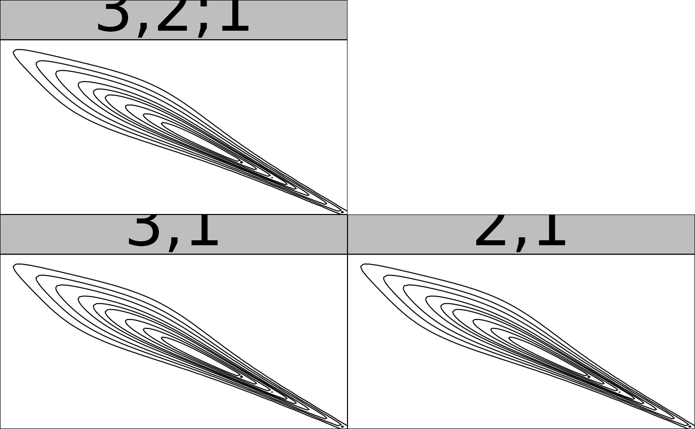

Create custom vine copula models by specifying the pair-copulas, structure, and variable types.
vinecop_dist(pair_copulas, structure, var_types = rep("c", dim(structure)[1]))
| pair_copulas | A nested list of ' |
|---|---|
| structure | an |
| var_types | variable types, a length d vector; e.g., |
Object of class vinecop_dist, i.e., a list containing:
pair_copulas, a list of lists. Each element of pair_copulas corresponds
to a tree, which is itself a list of bicop_dist() objects.
structure, a compressed representation of the vine structure, or an
object that can be coerced into one (see rvine_structure() and
as_rvine_structure()).
npars, a numeric with the number of (effective) parameters.
var_types the variable types.
rvine_structure(), rvine_matrix(), vinecop(),
plot.vinecop_dist(), contour.vinecop_dist(), dvinecop(),
pvinecop(), rvinecop()
# specify pair-copulas bicop <- bicop_dist("bb1", 90, c(3, 2)) pcs <- list( list(bicop, bicop), # pair-copulas in first tree list(bicop) # pair-copulas in second tree ) # specify R-vine matrix mat <- matrix(c(1, 2, 3, 1, 2, 0, 1, 0, 0), 3, 3) # set up vine copula model vc <- vinecop_dist(pcs, mat) # visualization plot(vc)  contour(vc)  # simulate from the model pairs(rvinecop(200, vc))